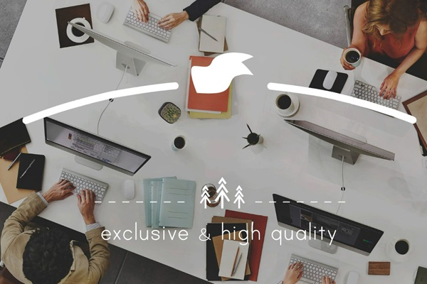
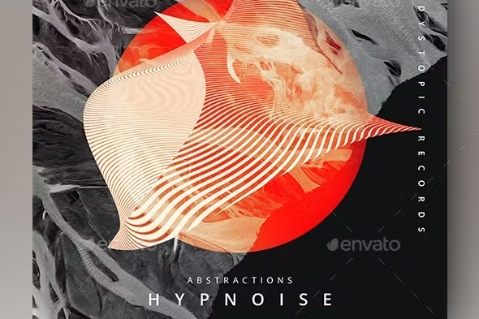

AI Developer with hands-on experience building RAG pipelines, AI agents, and LangChain/LangGraph workflows. Currently developing an AI-powered QA agent at Vosyn. Open to AI Developer, AI Engineer, Agentic AI, and GenAI Developer roles across Canada.
01 — About
I'm Mudit Markan — a Generative AI and Agentic AI developer based in Canada. My work sits at the intersection of LLMs, retrieval-augmented generation, and multi-step agent workflows.
At Vosyn, I'm currently building an AI-powered QA agent that autonomously identifies bugs, improves issue analysis, and generates structured test reports. Before that, I led a team of 20+ developers building full-stack features with React, Next.js, and REST APIs.
I've built a local-first GenAI system using Python, Qwen via Ollama, LangChain, and LangGraph — implementing RAG with embeddings, multi-step agentic workflows, structured output validation, and hallucination-reduction safeguards. I'm looking for opportunities in Ontario or remotely across Canada.
02 — Skills & Experience
My core toolkit for building production-ready AI applications — from LLM orchestration and RAG pipelines to full-stack deployment.
LangChain, LangGraph, Ollama (Qwen), RAG pipelines, vector embeddings, prompt engineering, structured output validation.
Agentic workflows, multi-step reasoning, tool-use agents, QA automation agents, hallucination-reduction safeguards.
Python, TypeScript, JavaScript — React, Next.js, Node.js. Building full-stack AI-powered applications end-to-end.
PostgreSQL (log validation, query analysis), SQL, vector stores for RAG, database testing and debugging.
Git, GitHub, Docker, REST APIs, Vercel, Jira, Linux — version control, CI/CD workflows, and API integration.
AI-powered QA agent development, bug reproduction, log analysis, test case design, fix validation, and structured reporting.
Vosyn Inc. — Mississauga, ON · Hybrid
Vosyn Inc. — Mississauga, ON · Remote
George Brown Polytechnic — Toronto, ON · On-site
Techmihir Naik — Delhi, India · Remote
03 — Projects
A focused selection of AI, GenAI, and agentic projects — built with LangChain, LangGraph, Python, and TypeScript.
An AI-powered insurance claims assistant built with Python. Processes and analyzes claims data using LLM-backed logic with structured validation and intelligent triage — the most recently updated AI project.
An agentic budget tracking application deployed on Vercel. Built with TypeScript, it uses AI-driven logic to categorize, track, and analyze financial data — with a live public demo.
A substantial Python AI project built as part of George Brown's Computer Programming program. The largest repo by size (~18MB), demonstrating applied AI development with real data, models, and structured outputs.

Two roles in one product: as Software Team Lead, built React/Next.js localization features (video, audio, transcript) across 4 product streams with 20+ developers. Now as AI & Automation Developer, building an autonomous QA agent using LangGraph and LangChain that identifies bugs, coordinates multi-step test analysis, validates PostgreSQL data, and generates structured reports — cutting manual QA overhead and making the testing pipeline smarter.

Built a real physical robot that detects and responds to human emotions. The GitHub repo includes multiple working demo videos showing the robot in action. Combines hardware integration, sensor input, programming logic, and embedded systems — a hands-on example of building intelligent, interactive AI-powered systems.
See all my AI and development projects on GitHub
04 — Education & Credentials
Academic background and credentials supporting my work in AI development and software engineering.
George Brown Polytechnic — Toronto, ON
Sep 2024 – May 2026
GPA: 3.68 / 4.0
Relevant Coursework:
Collège LaSalle, Montréal
Jan 2024 – Sep 2024
Relevant Skills:
Tecnia Institute of Advanced Studies — New Delhi, India
Aug 2019 – Jul 2022
Three-year undergraduate degree covering CS fundamentals, programming, networking, databases, and software engineering principles.
LinkedIn Learning
Issued Dec 2025
Covers workplace cybersecurity threats, security awareness practices, and organizational protection strategies.
Top LinkedIn Skills:
Professor — Arts, Design & Information Technology
George Brown College · August 15, 2025
"I am pleased to recommend Mudit Markan for the Student Success - Welcome Desk Student Ambassador role. I have taught Database Management course to Mudit where I had the opportunity to observe his strong intellect, dedication, and unwavering commitment to learning."
"In terms of academic performance, Mudit consistently excelled in his studies, received full marks for all in-class labs and the lab test. He demonstrates a deep understanding of the material and seeks out opportunities to expand his knowledge. Mudit is not afraid to tackle challenging concepts."
"Beyond his academic achievements, Mudit possesses excellent communication skills and leadership abilities. He is a natural leader and has demonstrated his ability during the group project. I believe his positive attitude and willingness to help others will make him an asset to the team."
"Overall, I have no doubt that Mudit will continue to excel and make significant contributions in his future endeavors."
Vosyn Leadership Team
Vosyn Inc., Etobicoke, ON · August 11, 2025
Re: Mudit Markan — Employment Verification
"This letter confirms that Mudit Markan is a remote intern engaged with Vosyn Inc. as part of our structured experiential learning program, and he has performed his duties quite well throughout the period."
"As a Front End Developer, Mudit developed highly responsive UI pages and components using React.js and MUI, utilized Redux for state management, collaborated with backend and cloud engineering teams, and used Notion for team collaboration and documentation."
"We are happy to recommend Mr. Markan for any job prospect in his field, and he was an asset to our team."
Open to AI Developer, AI Engineer, Agentic AI Developer, and GenAI Developer roles — on-site, hybrid, or remote across Canada.